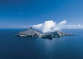

Bay of Plenty
Located southeast of the Coromandel, the Bay of Plenty offers a mild climate, beach after endless beach, kiwi-fruit orchards, green coastal plains and inland forest-laden mountains.
Tauranga, the region's main centre is a large, modern city offering plenty of shopping, boat cruises, nearby scenic coastal walks and many off-shore boating activities. Mount Maunganui (a 232 metre Volcanic cone located near Tauranga) offers some great hiking and magnificent views from the top. Nearby Ocean beach is a popular summer hot spot for holiday-makers and water-lovers a like.
Te Puke (20 km south) is where many of New Zealand's kiwi-fruit orchards are located. Further east, the pleasant sea-side town of Whakatane offers plenty of pictureque coastline walkways and is an ideal base from which to explore the off-shore phenomenon that is White Island - an active volcanoe. Helicopter, Fixed-wing and Boat trips are available from Whakatane.